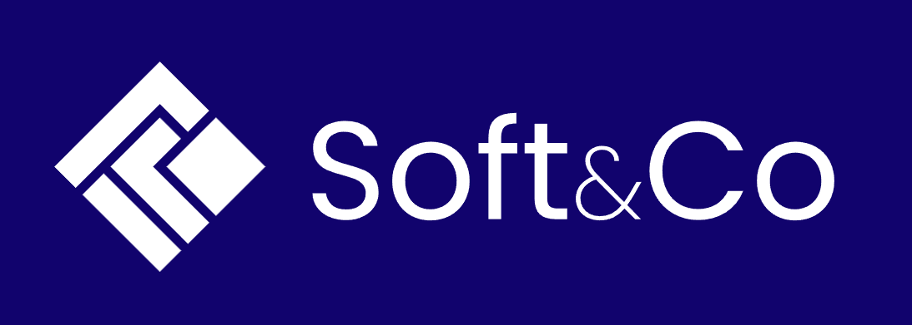
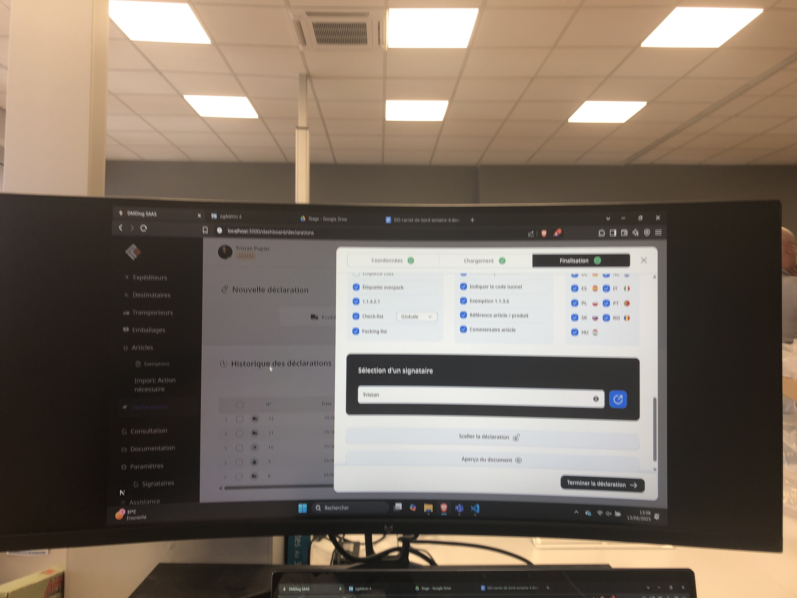
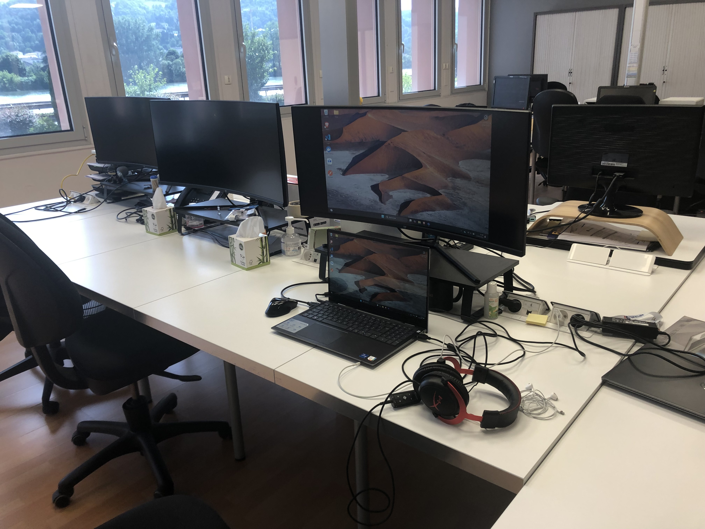
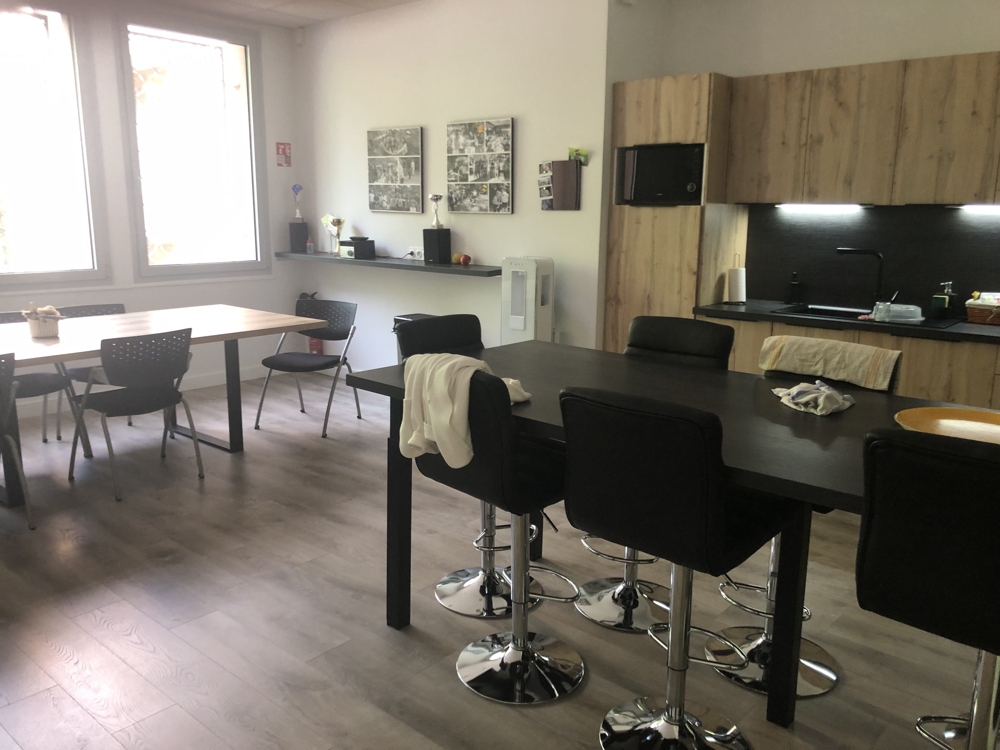

Soft&Co est une PME d'édition de logiciels applicatifs implantée à Vienne. C'est une SASU qui compte parmi ses clients des compagnies de transport de marchandises comme Airbus. C’est dans cette entreprise que j’ai effectué mes deux stages de BTS SIO (Le premier de mai à juin 2025 et le deuxième de janvier à février 2026).
La plupart des employés ont suivi un BTS SIO (SLAM) ou un BTS SNIR, puis une Licence Concepteur Développeur Full Stack, et enfin un Master Expert Développement Web.
L’entreprise utilise WinDev, Visual Studio Code, Docker, ApiDog et PostgreSQL pour développer ses solutions. Les postes sont majoritairement équipés de Windows 11.
Soft&Co propose deux versions de son logiciel : • un client lourd WinDev installé sur poste ou serveur • un client léger Web SAAS accessible via navigateur
Les projets sont gérés via GitHub et Jira. L’entreprise utilise la convention CamelCase, effectue des tests avant chaque commit, organise soigneusement ses fichiers et respecte la RGPD ainsi que les réglementations du transport.
En plus des compétences techniques acquises, j’ai appris à m’intégrer dans un environnement professionnel, à collaborer en équipe et à présenter mes travaux à l’oral.


